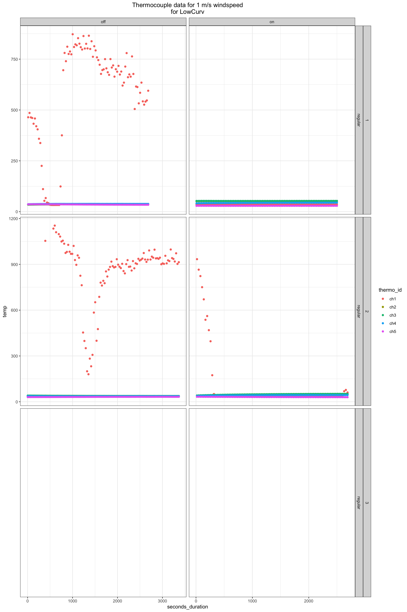
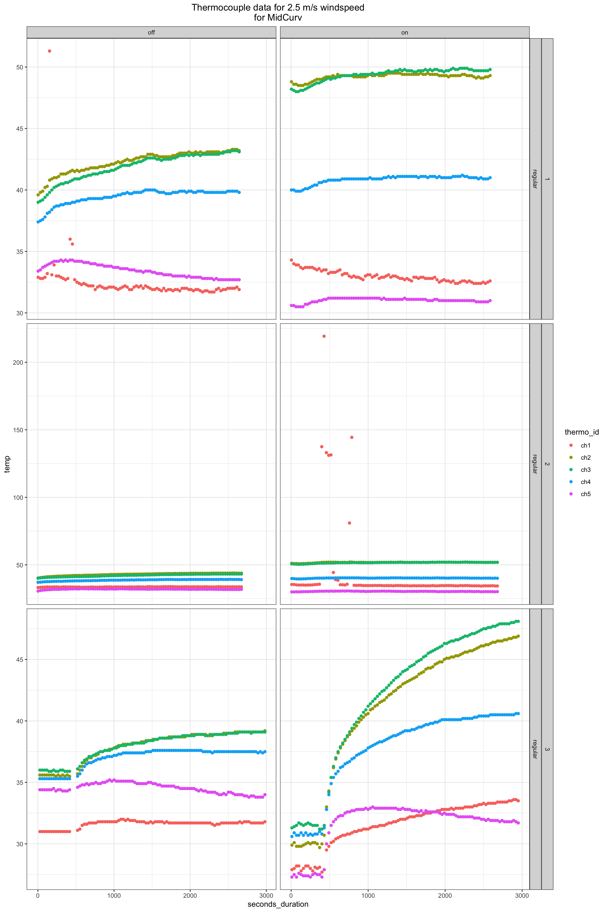
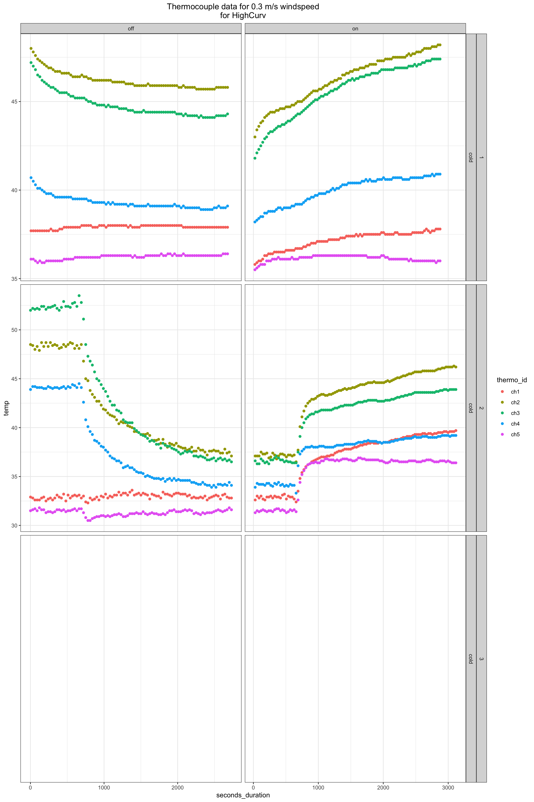
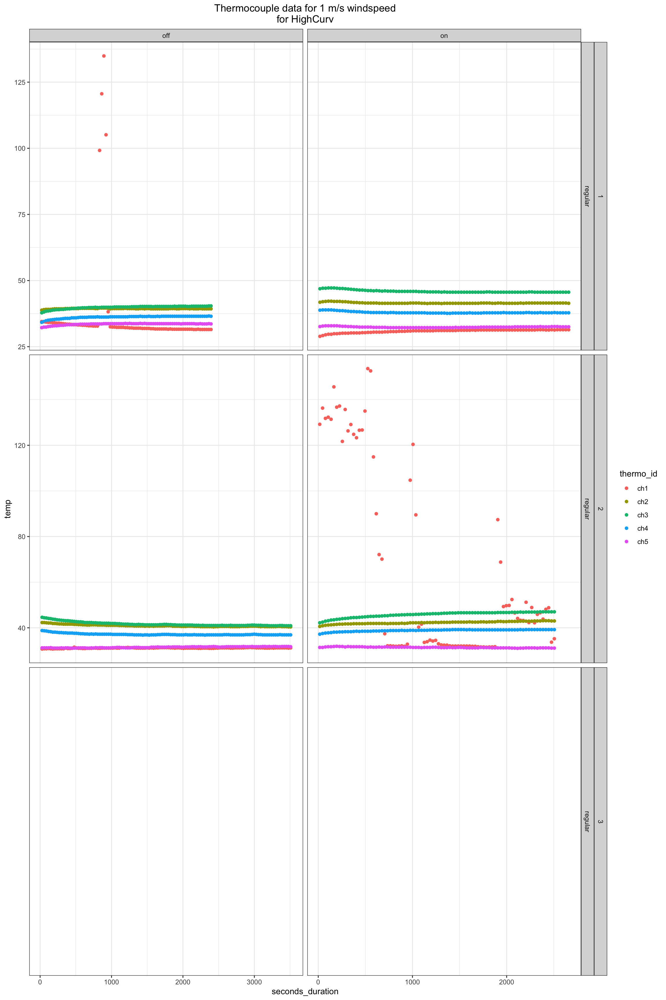
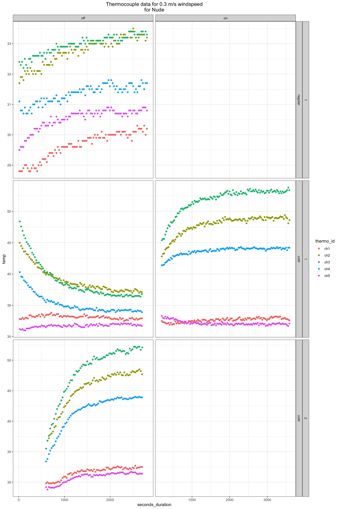
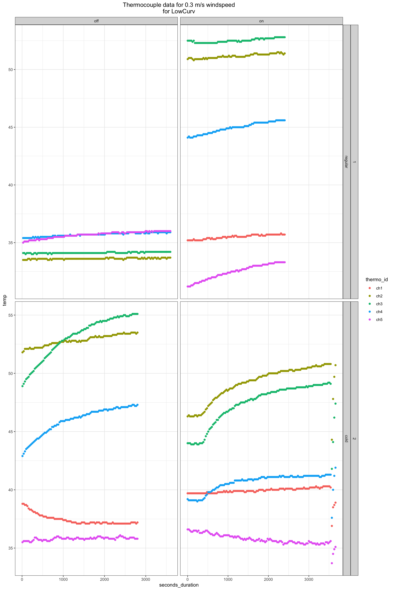
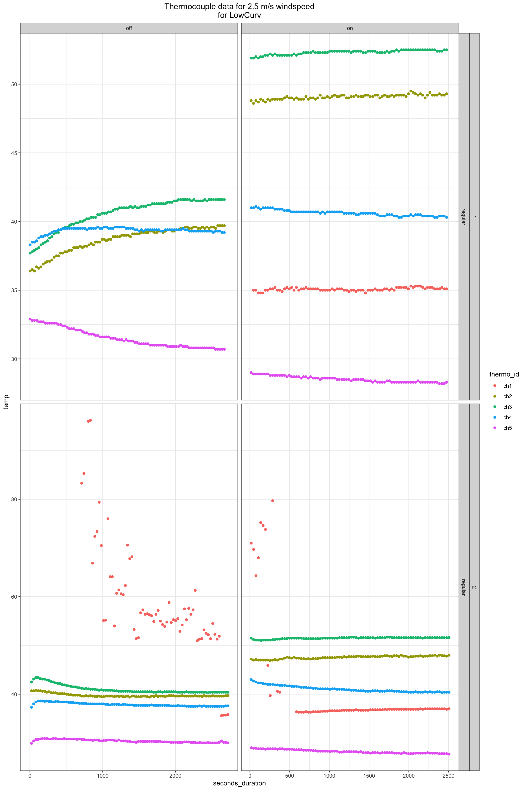
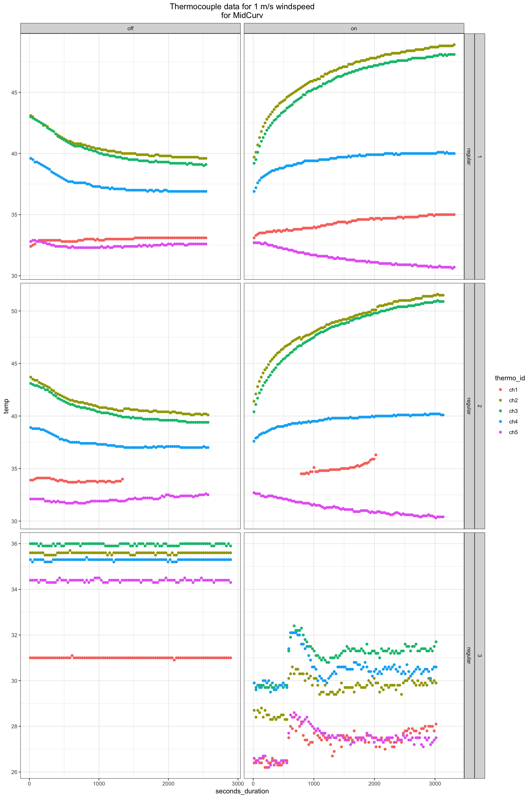
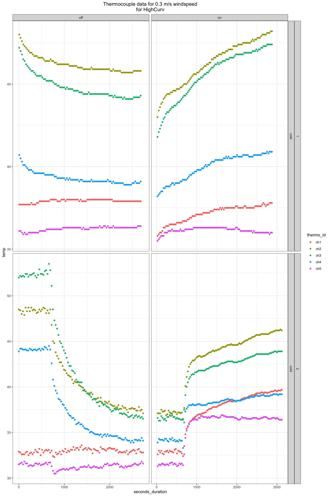
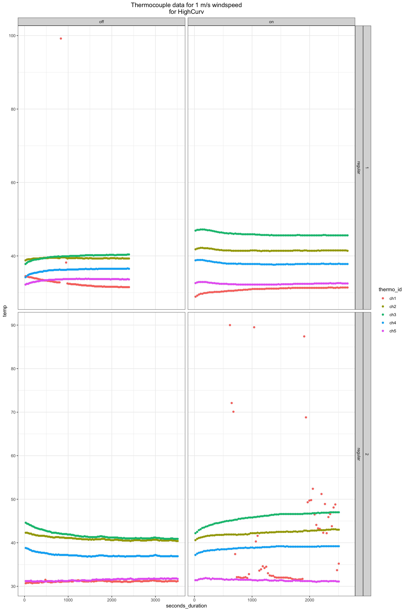

Thermocouple data import and quality control
Tina Lasisi
January 10, 2021
Last updated: 2021-01-10
Checks: 6 1
Knit directory: HairManikin/
This reproducible R Markdown analysis was created with workflowr (version 1.6.2). The Checks tab describes the reproducibility checks that were applied when the results were created. The Past versions tab lists the development history.
The R Markdown file has unstaged changes. To know which version of the R Markdown file created these results, you’ll want to first commit it to the Git repo. If you’re still working on the analysis, you can ignore this warning. When you’re finished, you can run wflow_publish to commit the R Markdown file and build the HTML.
Great job! The global environment was empty. Objects defined in the global environment can affect the analysis in your R Markdown file in unknown ways. For reproduciblity it’s best to always run the code in an empty environment.
The command set.seed(20200601) was run prior to running the code in the R Markdown file. Setting a seed ensures that any results that rely on randomness, e.g. subsampling or permutations, are reproducible.
Great job! Recording the operating system, R version, and package versions is critical for reproducibility.
Nice! There were no cached chunks for this analysis, so you can be confident that you successfully produced the results during this run.
Great job! Using relative paths to the files within your workflowr project makes it easier to run your code on other machines.
Great! You are using Git for version control. Tracking code development and connecting the code version to the results is critical for reproducibility.
The results in this page were generated with repository version a1e39b4. See the Past versions tab to see a history of the changes made to the R Markdown and HTML files.
Note that you need to be careful to ensure that all relevant files for the analysis have been committed to Git prior to generating the results (you can use wflow_publish or wflow_git_commit). workflowr only checks the R Markdown file, but you know if there are other scripts or data files that it depends on. Below is the status of the Git repository when the results were generated:
Ignored files:
Ignored: .Rhistory
Ignored: .Rproj.user/
Ignored: data/raw/2020_EvaporativeDataRaw.xlsx
Ignored: data/raw/Havenith_2021_Manikin_Dry_Wet_Summary/
Ignored: data/raw/ManikinData_March2018/Processed/
Ignored: data/raw/ManikinData_Oct2018/ExperimentLog_complete.xlsx
Ignored: data/raw/ManikinData_Oct2018/ManikinMasterFile.xlsx
Ignored: data/raw/ManikinData_Oct2018/MiscellaneousFiles/STEP 1 V7.3 NEWTON insulation calculation STEP 1 - Sept 2013 Thermdaq 8.xls
Ignored: data/raw/ManikinData_Oct2018/MiscellaneousFiles/STEP 2 V1.9 Newton template insulation and vapour resistance - November 2015.xlsm
Ignored: data/raw/ManikinData_Oct2018/Round1/ConvertedFiles/
Ignored: data/raw/ManikinData_Oct2018/Round1/NoWig_RadOff_wind0_3 (run with new conditions).xls
Ignored: data/raw/ManikinData_Oct2018/Round1/NoWig_RadOn_wind0_3 (run with new conditions).xls
Ignored: data/raw/ManikinData_Oct2018/Round1/STEP 1 V7.3 NEWTON insulation calculation STEP 1 - Sept 2013 Thermdaq 8.xls
Ignored: data/raw/ManikinData_Oct2018/Round1/STEP 2 V1.9 Newton template insulation and vapour resistance - November 2015.xlsm
Ignored: data/raw/ManikinData_Oct2018/Round1/no wig no radiation lowest wind.xlsm
Ignored: data/raw/ManikinData_Oct2018/Round1/no wig rad on lowest wind.xlsm
Ignored: data/raw/ManikinData_Oct2018/Round2/STEP1/
Ignored: data/raw/ManikinData_Oct2018/ThermoLog/2021-James_email/
Ignored: data/raw/ManikinData_Oct2018/ThermoLog/RawThermoFiles/ThermoCleanMaster.xlsx
Ignored: data/raw/ManikinData_Oct2018/ThermoLog/RawThermoFiles/ThermocoupleLog_Oct23.xlsx
Ignored: data/raw/ManikinData_Oct2018/ThermoLog/RawThermoFiles/ThermocoupleLog_Oct23Evening.xlsx
Ignored: data/raw/ManikinData_Oct2018/ThermoLog/RawThermoFiles/ThermocoupleLog_Oct24.xlsx
Ignored: data/raw/ManikinData_Oct2018/ThermoLog/RawThermoFiles/ThermocoupleLog_Oct25.xlsx
Ignored: data/raw/ManikinData_Oct2018/ThermoLog/RawThermoFiles/ThermocoupleLog_Oct26.xlsx
Ignored: data/raw/ManikinData_Oct2018/ThermoLog/RawThermoFiles/ThermocoupleLog_Oct28.xlsx
Ignored: data/raw/ManikinData_Oct2018/ThermoLog/RawThermoFiles/ThermocoupleLog_Oct29.xlsx
Ignored: data/raw/ManikinData_Oct2018/ThermoLog/RawThermoFiles/ThermocoupleLog_Oct30.xlsx
Ignored: data/raw/ManikinData_Oct2018/ThermoLog/extracted/
Untracked files:
Untracked: analysis/experimental_log.Rmd
Untracked: data/raw/ManikinData_Oct2018/ThermoLog/RawThermoFiles/ThermoCleanMaster.csv
Untracked: data/tidy/revised_experiment_log.csv
Unstaged changes:
Modified: analysis/_site.yml
Modified: analysis/thermocouple_qc.Rmd
Note that any generated files, e.g. HTML, png, CSS, etc., are not included in this status report because it is ok for generated content to have uncommitted changes.
These are the previous versions of the repository in which changes were made to the R Markdown (analysis/thermocouple_qc.Rmd) and HTML (docs/thermocouple_qc.html) files. If you’ve configured a remote Git repository (see ?wflow_git_remote), click on the hyperlinks in the table below to view the files as they were in that past version.
| File | Version | Author | Date | Message |
|---|---|---|---|---|
| html | 9150c38 | tinalasisi | 2021-01-08 | Build site. |
| Rmd | 3085832 | tinalasisi | 2021-01-08 | Updating thermocouple_qc analysis |
| html | e03417e | tinalasisi | 2021-01-08 | Build site. |
| Rmd | ada77f2 | tinalasisi | 2021-01-08 | Re-uploading latest version of all files + new thermocouple quality |
1 Import data
First, we import the data directly from the raw thermocouple files.
file_paths <- fs::dir_ls(F("data/raw/ManikinData_Oct2018/ThermoLog/RawThermoFiles/RawThermo_csv/"))
raw_dfs <- file_paths %>%
map_dfr(
read_csv,
skip = 22,
na = c("", "NA", "#NA", "#N/A", "Under", "O/C")
) %>%
mutate(Date = dmy(Date)) %>%
clean_names() %>%
rename_at(.vars = vars(ends_with("_c")),
.funs = funs(sub("[_]c$", "", .))) %>%
select(date:ch5, -type) %>%
mutate(DateTime = as_datetime(date(date) + hms(time)))
head(raw_dfs)# A tibble: 6 x 8
date time ch1 ch2 ch3 ch4 ch5 DateTime
<date> <time> <dbl> <dbl> <dbl> <dbl> <dbl> <dttm>
1 2018-10-23 11:39:46 NA 44.9 NA 42.3 30.4 2018-10-23 11:39:46
2 2018-10-23 11:40:16 NA 45 NA 42.2 30.4 2018-10-23 11:40:16
3 2018-10-23 11:40:46 NA 42.3 NA 39 29.7 2018-10-23 11:40:46
4 2018-10-23 11:41:16 31 42 NA 39.2 29.4 2018-10-23 11:41:16
5 2018-10-23 11:41:46 30.8 40.6 NA 38 29.2 2018-10-23 11:41:46
6 2018-10-23 11:42:16 30.6 40 NA 37.5 29.2 2018-10-23 11:42:162 Import Experiment Log
Then, we import the log with the times and dates for each experiment (with conditions used).
# Import the log with each experiment time and conditions
ExperimentLog <- as_tibble(
read_csv(F("data/tidy/revised_experiment_log.csv"))
) %>%
mutate(wig = as_factor(wig),
radiation = as_factor(radiation),
trial = as_factor(trial))
head(ExperimentLog)# A tibble: 6 x 11
DateTime_start DateTime_end wig radiation wind trial
<dttm> <dttm> <fct> <fct> <dbl> <fct>
1 2018-10-23 13:41:11 2018-10-23 14:28:43 Nude on 1 1
2 2018-10-23 14:34:19 2018-10-23 15:16:51 Nude on 2.5 1
3 2018-10-23 15:33:26 2018-10-23 16:16:28 Nude off 2.5 1
4 2018-10-23 16:18:38 2018-10-23 17:10:10 Nude off 1 1
5 2018-10-23 17:12:31 2018-10-23 17:59:32 Nude off 0.3 1
6 2018-10-23 19:12:07 2018-10-23 20:12:08 LowC… off 0.3 1
# … with 5 more variables: mean_face_temp <dbl>, mean_head_temp <dbl>,
# mean_shoulders_temp <dbl>, mean_amb_temp <dbl>, mean_rh <dbl>3 Clean data
On November 25th at noon, we had a discussion about the issues with overheating. While we had run a number of trials already, the straight wig with radiation on was the condition where we saw the manikin overheat. According to my notes, we decided that we would both lower the room temperature and increase the base temperature of the manikin (to 3 and 37 degrees Celsius, respectively, according to my notes).
Below, I add a number of variables to help visualize including a binary factor of “regular” and “cold” for the room temperature condition (which also would include the higher manikin temperature). The actual temperature of the manikin is included in the dataframe if needed.
3.1 Table with log
| DateTime_start | DateTime_end | wig | radiation | wind | trial | mean_face_temp | mean_head_temp | mean_shoulders_temp | mean_amb_temp | mean_rh | Trial_Interval | Trial_Duration | RoomConditions |
|---|---|---|---|---|---|---|---|---|---|---|---|---|---|
| 2018-10-23 13:41:11 | 2018-10-23 14:28:43 | Nude | on | 1 | 1 | 33.98737 | 33.99147 | 33.99579 | 9.902737 | 41.31895 | 2018-10-23 13:41:11 UTC–2018-10-23 14:28:43 UTC | 2852s (~47.53 minutes) | regular |
| 2018-10-23 14:34:19 | 2018-10-23 15:16:51 | Nude | on | 2.5 | 1 | 33.91894 | 33.94776 | 33.96835 | 9.014824 | 41.03294 | 2018-10-23 14:34:19 UTC–2018-10-23 15:16:51 UTC | 2552s (~42.53 minutes) | regular |
| 2018-10-23 15:33:26 | 2018-10-23 16:16:28 | Nude | off | 2.5 | 1 | 34.00058 | 33.99581 | 33.99605 | 8.711279 | 42.62791 | 2018-10-23 15:33:26 UTC–2018-10-23 16:16:28 UTC | 2582s (~43.03 minutes) | regular |
| 2018-10-23 16:18:38 | 2018-10-23 17:10:10 | Nude | off | 1 | 1 | 34.11282 | 34.07379 | 34.04641 | 9.109029 | 43.67087 | 2018-10-23 16:18:38 UTC–2018-10-23 17:10:10 UTC | 3092s (~51.53 minutes) | regular |
| 2018-10-23 17:12:31 | 2018-10-23 17:59:32 | Nude | off | 0.3 | 1 | 34.05989 | 34.01702 | 34.02106 | 9.443404 | 42.32447 | 2018-10-23 17:12:31 UTC–2018-10-23 17:59:32 UTC | 2821s (~47.02 minutes) | regular |
| 2018-10-23 19:12:07 | 2018-10-23 20:12:08 | LowCurv | off | 0.3 | 1 | 34.00700 | 34.00542 | 34.00783 | 9.400083 | 41.87833 | 2018-10-23 19:12:07 UTC–2018-10-23 20:12:08 UTC | 3601s (~1 hours) | regular |
| 2018-10-23 20:13:51 | 2018-10-23 20:58:53 | LowCurv | off | 1 | 1 | 33.94411 | 33.98500 | 33.97233 | 9.065889 | 43.51778 | 2018-10-23 20:13:51 UTC–2018-10-23 20:58:53 UTC | 2702s (~45.03 minutes) | regular |
| 2018-10-23 21:01:02 | 2018-10-23 21:46:03 | LowCurv | off | 2.5 | 1 | 33.88356 | 33.97422 | 33.93622 | 8.768556 | 43.47333 | 2018-10-23 21:01:02 UTC–2018-10-23 21:46:03 UTC | 2701s (~45.02 minutes) | regular |
| 2018-10-24 09:07:48 | 2018-10-24 09:49:19 | LowCurv | on | 2.5 | 1 | 34.00108 | 33.99988 | 33.99434 | 8.963735 | 42.60723 | 2018-10-24 09:07:48 UTC–2018-10-24 09:49:19 UTC | 2491s (~41.52 minutes) | regular |
| 2018-10-24 09:50:54 | 2018-10-24 10:32:55 | LowCurv | on | 1 | 1 | 34.14298 | 34.04726 | 34.08048 | 9.451667 | 42.47143 | 2018-10-24 09:50:54 UTC–2018-10-24 10:32:55 UTC | 2521s (~42.02 minutes) | regular |
| 2018-10-24 10:59:01 | 2018-10-24 11:39:32 | LowCurv | on | 0.3 | 1 | 34.00160 | 35.13667 | 34.00247 | 10.490370 | 40.58519 | 2018-10-24 10:59:01 UTC–2018-10-24 11:39:32 UTC | 2431s (~40.52 minutes) | regular |
| 2018-10-24 12:08:00 | 2018-10-24 12:52:32 | MidCurv | off | 2.5 | 1 | 33.87225 | 33.98562 | 33.94562 | 8.858315 | 42.19326 | 2018-10-24 12:08:00 UTC–2018-10-24 12:52:32 UTC | 2672s (~44.53 minutes) | regular |
| 2018-10-24 12:53:14 | 2018-10-24 13:35:45 | MidCurv | off | 1 | 1 | 34.16282 | 34.04024 | 34.07635 | 9.090471 | 42.71765 | 2018-10-24 12:53:14 UTC–2018-10-24 13:35:45 UTC | 2551s (~42.52 minutes) | regular |
| 2018-10-24 13:38:18 | 2018-10-24 14:33:50 | MidCurv | on | 1 | 1 | 33.99937 | 34.01550 | 34.02027 | 9.527297 | 39.00180 | 2018-10-24 13:38:18 UTC–2018-10-24 14:33:50 UTC | 3332s (~55.53 minutes) | regular |
| 2018-10-24 14:36:29 | 2018-10-24 15:20:01 | MidCurv | on | 2.5 | 1 | 33.85264 | 33.95805 | 33.92299 | 9.151609 | 39.31494 | 2018-10-24 14:36:29 UTC–2018-10-24 15:20:01 UTC | 2612s (~43.53 minutes) | regular |
| 2018-10-24 16:04:10 | 2018-10-24 16:44:11 | HighCurv | off | 1 | 1 | 33.92225 | 33.98588 | 33.96612 | 9.340875 | 39.54250 | 2018-10-24 16:04:10 UTC–2018-10-24 16:44:11 UTC | 2401s (~40.02 minutes) | regular |
| 2018-10-24 16:46:21 | 2018-10-24 17:31:22 | HighCurv | off | 2.5 | 1 | 33.88678 | 33.96589 | 33.94033 | 8.884444 | 41.19000 | 2018-10-24 16:46:21 UTC–2018-10-24 17:31:22 UTC | 2701s (~45.02 minutes) | regular |
| 2018-10-24 17:32:10 | 2018-10-24 18:20:42 | HighCurv | on | 2.5 | 1 | 34.00557 | 34.00515 | 34.03680 | 8.972577 | 39.80000 | 2018-10-24 17:32:10 UTC–2018-10-24 18:20:42 UTC | 2912s (~48.53 minutes) | regular |
| 2018-10-24 18:22:45 | 2018-10-24 19:07:17 | HighCurv | on | 1 | 1 | 34.14607 | 34.04697 | 34.08393 | 9.426292 | 40.81798 | 2018-10-24 18:22:45 UTC–2018-10-24 19:07:17 UTC | 2672s (~44.53 minutes) | regular |
| 2018-10-25 11:11:06 | 2018-10-25 11:56:08 | LowCurv | on | 0.3 | 1 | 37.92644 | 37.92556 | 37.92589 | 2.201222 | 46.15000 | 2018-10-25 11:11:06 UTC–2018-10-25 11:56:08 UTC | 2702s (~45.03 minutes) | cold |
| 2018-10-25 11:59:09 | 2018-10-25 12:44:11 | LowCurv | off | 0.3 | 1 | 37.99833 | 37.96989 | 37.98044 | 1.441333 | 47.54444 | 2018-10-25 11:59:09 UTC–2018-10-25 12:44:11 UTC | 2702s (~45.03 minutes) | cold |
| 2018-10-25 12:47:59 | 2018-10-25 13:48:01 | Nude | on | 0.3 | 1 | 37.98517 | 37.98867 | 38.02750 | 2.307333 | 47.05250 | 2018-10-25 12:47:59 UTC–2018-10-25 13:48:01 UTC | 3602s (~1 hours) | cold |
| 2018-10-25 13:48:52 | 2018-10-25 14:33:54 | Nude | off | 0.3 | 1 | 37.99700 | 37.90611 | 37.94456 | 1.447778 | 48.32222 | 2018-10-25 13:48:52 UTC–2018-10-25 14:33:54 UTC | 2702s (~45.03 minutes) | cold |
| 2018-10-25 14:37:22 | 2018-10-25 15:25:23 | HighCurv | on | 0.3 | 1 | 38.01365 | 38.10073 | 38.02760 | 1.724583 | 47.60833 | 2018-10-25 14:37:22 UTC–2018-10-25 15:25:23 UTC | 2881s (~48.02 minutes) | cold |
| 2018-10-25 15:26:38 | 2018-10-25 16:11:39 | HighCurv | off | 0.3 | 1 | 37.99644 | 37.99122 | 37.95711 | 1.307778 | 48.54111 | 2018-10-25 15:26:38 UTC–2018-10-25 16:11:39 UTC | 2701s (~45.02 minutes) | cold |
| 2018-10-25 16:18:52 | 2018-10-25 17:38:55 | MidCurv | on | 0.3 | 1 | 38.00875 | 38.03556 | 38.00581 | 1.876875 | 47.14500 | 2018-10-25 16:18:52 UTC–2018-10-25 17:38:55 UTC | 4803s (~1.33 hours) | cold |
| 2018-10-25 17:39:43 | 2018-10-25 18:19:44 | MidCurv | off | 0.3 | 1 | 37.99125 | 37.97563 | 37.96838 | 1.340625 | 48.17000 | 2018-10-25 17:39:43 UTC–2018-10-25 18:19:44 UTC | 2401s (~40.02 minutes) | cold |
| 2018-10-26 09:46:40 | 2018-10-26 10:40:12 | HighCurv | off | 2.5 | 2 | 33.87888 | 33.99542 | 33.94729 | 8.816636 | 43.77009 | 2018-10-26 09:46:40 UTC–2018-10-26 10:40:12 UTC | 3212s (~53.53 minutes) | regular |
| 2018-10-26 10:46:03 | 2018-10-26 11:44:35 | HighCurv | off | 1 | 2 | 34.03248 | 34.00718 | 34.01402 | 8.979744 | 43.80684 | 2018-10-26 10:46:03 UTC–2018-10-26 11:44:35 UTC | 3512s (~58.53 minutes) | regular |
| 2018-10-26 11:53:15 | 2018-10-26 12:35:17 | HighCurv | on | 1 | 2 | 33.91083 | 34.00988 | 34.03988 | 9.353333 | 42.72619 | 2018-10-26 11:53:15 UTC–2018-10-26 12:35:17 UTC | 2522s (~42.03 minutes) | regular |
| 2018-10-26 12:36:49 | 2018-10-26 13:18:20 | HighCurv | on | 2.5 | 2 | 33.86398 | 33.95614 | 33.91867 | 9.168193 | 42.27590 | 2018-10-26 12:36:49 UTC–2018-10-26 13:18:20 UTC | 2491s (~41.52 minutes) | regular |
| 2018-10-26 13:21:09 | 2018-10-26 14:06:40 | LowCurv | off | 2.5 | 2 | 33.99681 | 34.01956 | 33.97967 | 8.914176 | 43.11648 | 2018-10-26 13:21:09 UTC–2018-10-26 14:06:40 UTC | 2731s (~45.52 minutes) | regular |
| 2018-10-26 14:08:57 | 2018-10-26 15:05:29 | LowCurv | off | 1 | 2 | 34.08115 | 34.01770 | 34.04106 | 9.123186 | 43.86018 | 2018-10-26 14:08:57 UTC–2018-10-26 15:05:29 UTC | 3392s (~56.53 minutes) | regular |
| 2018-10-26 15:07:43 | 2018-10-26 15:52:44 | LowCurv | on | 1 | 2 | 34.00444 | 34.03289 | 34.02100 | 9.629667 | 42.82778 | 2018-10-26 15:07:43 UTC–2018-10-26 15:52:44 UTC | 2701s (~45.02 minutes) | regular |
| 2018-10-26 15:54:15 | 2018-10-26 16:36:16 | LowCurv | on | 2.5 | 2 | 33.86464 | 33.96095 | 33.92405 | 9.266310 | 41.98095 | 2018-10-26 15:54:15 UTC–2018-10-26 16:36:16 UTC | 2521s (~42.02 minutes) | regular |
| 2018-10-26 16:46:29 | 2018-10-26 17:31:30 | MidCurv | off | 2.5 | 2 | 34.02522 | 34.11400 | 34.00744 | 8.899889 | 43.24111 | 2018-10-26 16:46:29 UTC–2018-10-26 17:31:30 UTC | 2701s (~45.02 minutes) | regular |
| 2018-10-26 17:32:42 | 2018-10-26 18:15:44 | MidCurv | off | 1 | 2 | 34.13884 | 34.03081 | 34.06500 | 9.051279 | 44.01977 | 2018-10-26 17:32:42 UTC–2018-10-26 18:15:44 UTC | 2582s (~43.03 minutes) | regular |
| 2018-10-26 18:17:48 | 2018-10-26 19:10:19 | MidCurv | on | 1 | 2 | 33.99924 | 34.01810 | 34.02019 | 9.414762 | 42.69429 | 2018-10-26 18:17:48 UTC–2018-10-26 19:10:19 UTC | 3151s (~52.52 minutes) | regular |
| 2018-10-26 19:11:53 | 2018-10-26 19:56:54 | MidCurv | on | 2.5 | 2 | 33.87056 | 33.96522 | 33.93544 | 9.028444 | 41.74111 | 2018-10-26 19:11:53 UTC–2018-10-26 19:56:54 UTC | 2701s (~45.02 minutes) | regular |
| 2018-10-28 09:30:53 | 2018-10-28 10:17:54 | Nude | on | 0.3 | 2 | 37.66979 | 37.74287 | 37.71957 | 2.001170 | 43.35638 | 2018-10-28 09:30:53 UTC–2018-10-28 10:17:54 UTC | 2821s (~47.02 minutes) | cold |
| 2018-10-28 10:18:51 | 2018-10-28 11:03:52 | Nude | off | 0.3 | 2 | 38.00478 | 37.90667 | 37.94589 | 1.273222 | 43.94889 | 2018-10-28 10:18:51 UTC–2018-10-28 11:03:52 UTC | 2701s (~45.02 minutes) | cold |
| 2018-10-28 11:06:50 | 2018-10-28 11:52:22 | HighCurv | off | 0.3 | 2 | 38.01769 | 38.09901 | 37.99846 | 1.036923 | 44.56703 | 2018-10-28 11:06:50 UTC–2018-10-28 11:52:22 UTC | 2732s (~45.53 minutes) | cold |
| 2018-10-28 11:54:23 | 2018-10-28 12:46:24 | HighCurv | on | 0.3 | 2 | 38.00125 | 38.01096 | 38.03981 | 1.510000 | 43.03269 | 2018-10-28 11:54:23 UTC–2018-10-28 12:46:24 UTC | 3121s (~52.02 minutes) | cold |
| 2018-10-28 12:48:21 | 2018-10-28 13:49:23 | LowCurv | on | 0.3 | 2 | 37.99811 | 38.03934 | 38.00352 | 2.130082 | 42.30656 | 2018-10-28 12:48:21 UTC–2018-10-28 13:49:23 UTC | 3662s (~1.02 hours) | cold |
| 2018-10-28 13:50:41 | 2018-10-28 14:37:42 | LowCurv | off | 0.3 | 2 | 37.99670 | 37.96447 | 37.96926 | 1.339255 | 43.64468 | 2018-10-28 13:50:41 UTC–2018-10-28 14:37:42 UTC | 2821s (~47.02 minutes) | cold |
| 2018-10-28 14:41:00 | 2018-10-28 15:41:01 | MidCurv | off | 0.3 | 2 | 37.99783 | 38.01817 | 38.00067 | 1.044583 | 44.00667 | 2018-10-28 14:41:00 UTC–2018-10-28 15:41:01 UTC | 3601s (~1 hours) | cold |
| 2018-10-28 15:42:00 | 2018-10-28 16:47:32 | MidCurv | on | 0.3 | 2 | 38.00313 | 38.01443 | 38.02183 | 1.672519 | 42.50763 | 2018-10-28 15:42:00 UTC–2018-10-28 16:47:32 UTC | 3932s (~1.09 hours) | cold |
| 2018-10-29 08:05:17 | 2018-10-29 09:14:19 | Nude | on | 1 | 2 | 33.95717 | 34.00043 | 34.00899 | 9.509420 | 42.84710 | 2018-10-29 08:05:17 UTC–2018-10-29 09:14:19 UTC | 4142s (~1.15 hours) | regular |
| 2018-10-29 09:15:54 | 2018-10-29 10:27:57 | Nude | on | 2.5 | 2 | 33.91639 | 33.94139 | 33.95854 | 9.087014 | 42.48125 | 2018-10-29 09:15:54 UTC–2018-10-29 10:27:57 UTC | 4323s (~1.2 hours) | regular |
| 2018-10-29 10:29:45 | 2018-10-29 11:09:47 | Nude | off | 2.5 | 2 | 33.99450 | 33.91513 | 33.95537 | 8.748375 | 43.78875 | 2018-10-29 10:29:45 UTC–2018-10-29 11:09:47 UTC | 2402s (~40.03 minutes) | regular |
| 2018-10-29 11:11:15 | 2018-10-29 11:55:16 | Nude | off | 1 | 2 | 34.14989 | 34.10500 | 34.06830 | 8.970682 | 44.06932 | 2018-10-29 11:11:15 UTC–2018-10-29 11:55:16 UTC | 2641s (~44.02 minutes) | regular |
| 2018-10-29 11:57:36 | 2018-10-29 12:48:07 | Nude | on | 1 | 3 | 34.00020 | 34.07069 | 34.04267 | 9.689010 | 43.03762 | 2018-10-29 11:57:36 UTC–2018-10-29 12:48:07 UTC | 3031s (~50.52 minutes) | regular |
| 2018-10-29 12:49:33 | 2018-10-29 13:35:35 | Nude | on | 2.5 | 3 | 33.86457 | 33.90511 | 33.93304 | 9.213913 | 42.34239 | 2018-10-29 12:49:33 UTC–2018-10-29 13:35:35 UTC | 2762s (~46.03 minutes) | regular |
| 2018-10-29 13:36:58 | 2018-10-29 14:51:30 | Nude | off | 2.5 | 3 | 33.99779 | 33.94906 | 33.97456 | 8.765503 | 43.47450 | 2018-10-29 13:36:58 UTC–2018-10-29 14:51:30 UTC | 4472s (~1.24 hours) | regular |
| 2018-10-29 14:56:44 | 2018-10-29 15:43:15 | Nude | off | 1 | 3 | 34.14022 | 34.09624 | 34.06366 | 9.033548 | 44.23441 | 2018-10-29 14:56:44 UTC–2018-10-29 15:43:15 UTC | 2791s (~46.52 minutes) | regular |
| 2018-10-29 15:46:25 | 2018-10-29 16:36:57 | MidCurv | on | 1 | 3 | 34.02604 | 34.08812 | 34.02614 | 9.446436 | 43.14257 | 2018-10-29 15:46:25 UTC–2018-10-29 16:36:57 UTC | 3032s (~50.53 minutes) | regular |
| 2018-10-29 16:38:31 | 2018-10-29 17:28:02 | MidCurv | on | 2.5 | 3 | 33.88172 | 33.96869 | 33.93778 | 8.931414 | 41.93434 | 2018-10-29 16:38:31 UTC–2018-10-29 17:28:02 UTC | 2971s (~49.52 minutes) | regular |
| 2018-10-30 08:45:57 | 2018-10-30 09:34:28 | MidCurv | off | 1 | 3 | 33.94557 | 33.98876 | 33.97711 | 8.812990 | 44.19691 | 2018-10-30 08:45:57 UTC–2018-10-30 09:34:28 UTC | 2911s (~48.52 minutes) | regular |
| 2018-10-30 09:36:15 | 2018-10-30 10:26:17 | MidCurv | off | 2.5 | 3 | 33.88460 | 33.97160 | 33.94470 | 8.720000 | 43.23700 | 2018-10-30 09:36:15 UTC–2018-10-30 10:26:17 UTC | 3002s (~50.03 minutes) | regular |
| 2018-10-30 10:40:26 | 2018-10-30 11:40:28 | HighCurv | on | 2.5 | 3 | 34.01183 | 34.01500 | 34.02533 | 8.801167 | 42.33000 | 2018-10-30 10:40:26 UTC–2018-10-30 11:40:28 UTC | 3602s (~1 hours) | regular |
| 2018-10-30 11:42:09 | 2018-10-30 12:31:11 | HighCurv | on | 1 | 3 | 34.11418 | 34.03704 | 34.06857 | 9.122653 | 42.43469 | 2018-10-30 11:42:09 UTC–2018-10-30 12:31:11 UTC | 2942s (~49.03 minutes) | regular |
| 2018-10-30 12:35:09 | 2018-10-30 13:38:11 | HighCurv | off | 1 | 3 | 33.98556 | 33.99079 | 33.96722 | 9.004127 | 44.36587 | 2018-10-30 12:35:09 UTC–2018-10-30 13:38:11 UTC | 3782s (~1.05 hours) | regular |
| 2018-10-30 13:41:41 | 2018-10-30 14:33:12 | HighCurv | off | 2.5 | 3 | 33.92660 | 33.98039 | 33.96728 | 8.696408 | 42.76214 | 2018-10-30 13:41:41 UTC–2018-10-30 14:33:12 UTC | 3091s (~51.52 minutes) | regular |
| 2018-10-30 14:35:05 | 2018-10-30 15:47:38 | LowCurv | on | 2.5 | 3 | 33.99800 | 34.03262 | 34.01214 | 8.899586 | 41.97172 | 2018-10-30 14:35:05 UTC–2018-10-30 15:47:38 UTC | 4353s (~1.21 hours) | regular |
| 2018-10-30 15:49:15 | 2018-10-30 16:46:17 | LowCurv | on | 1 | 3 | 34.09561 | 34.03105 | 34.05254 | 9.432982 | 42.15614 | 2018-10-30 15:49:15 UTC–2018-10-30 16:46:17 UTC | 3422s (~57.03 minutes) | regular |
| 2018-10-30 16:47:51 | 2018-10-30 17:37:23 | LowCurv | off | 1 | 3 | 33.99636 | 33.96980 | 33.97970 | 9.092020 | 42.91313 | 2018-10-30 16:47:51 UTC–2018-10-30 17:37:23 UTC | 2972s (~49.53 minutes) | regular |
| 2018-10-30 17:38:41 | 2018-10-30 18:28:42 | LowCurv | off | 2.5 | 3 | 33.87110 | 33.97090 | 33.93220 | 8.710600 | 42.36900 | 2018-10-30 17:38:41 UTC–2018-10-30 18:28:42 UTC | 3001s (~50.02 minutes) | regular |
| 2018-10-31 09:00:02 | 2018-10-31 10:00:04 | LowCurv | on | 0.3 | 3 | 37.75733 | 37.80158 | 37.78033 | 1.882583 | 44.84417 | 2018-10-31 09:00:02 UTC–2018-10-31 10:00:04 UTC | 3602s (~1 hours) | cold |
| 2018-10-31 10:01:01 | 2018-10-31 10:47:03 | LowCurv | off | 0.3 | 3 | 37.99967 | 37.96652 | 37.97489 | 1.281956 | 46.37283 | 2018-10-31 10:01:01 UTC–2018-10-31 10:47:03 UTC | 2762s (~46.03 minutes) | cold |
| 2018-10-31 10:49:37 | 2018-10-31 11:38:08 | Nude | on | 0.3 | 3 | 37.98876 | 37.98773 | 38.03454 | 2.152165 | 46.71340 | 2018-10-31 10:49:37 UTC–2018-10-31 11:38:08 UTC | 2911s (~48.52 minutes) | cold |
| 2018-10-31 11:39:37 | 2018-10-31 12:42:39 | Nude | off | 0.3 | 3 | 37.99905 | 37.94143 | 37.96468 | 1.285079 | 48.58016 | 2018-10-31 11:39:37 UTC–2018-10-31 12:42:39 UTC | 3782s (~1.05 hours) | cold |
| 2018-10-31 12:45:09 | 2018-10-31 13:54:41 | MidCurv | on | 0.3 | 3 | 38.01151 | 38.08935 | 38.02309 | 1.717842 | 48.56691 | 2018-10-31 12:45:09 UTC–2018-10-31 13:54:41 UTC | 4172s (~1.16 hours) | cold |
| 2018-10-31 13:55:58 | 2018-10-31 14:39:30 | MidCurv | off | 0.3 | 3 | 37.99816 | 37.97690 | 37.96920 | 1.296322 | 50.00575 | 2018-10-31 13:55:58 UTC–2018-10-31 14:39:30 UTC | 2612s (~43.53 minutes) | cold |
| 2018-10-31 14:42:13 | 2018-10-31 15:37:45 | HighCurv | on | 0.3 | 3 | 38.00523 | 38.01829 | 38.02685 | 1.610090 | 49.06667 | 2018-10-31 14:42:13 UTC–2018-10-31 15:37:45 UTC | 3332s (~55.53 minutes) | cold |
| 2018-10-31 15:41:56 | 2018-10-31 16:36:58 | HighCurv | off | 0.3 | 3 | 37.99673 | 37.99118 | 37.96464 | 1.266364 | 50.29727 | 2018-10-31 15:41:56 UTC–2018-10-31 16:36:58 UTC | 3302s (~55.03 minutes) | cold |
Because the duration of the trials was variable, we will have to normalize the duration of the trials for comparison later on. Below is the trial that was the shortest according to these experimental logs.
| DateTime_start | DateTime_end | wig | radiation | wind | trial | mean_face_temp | mean_head_temp | mean_shoulders_temp | mean_amb_temp | mean_rh | Trial_Interval | Trial_Duration | RoomConditions |
|---|---|---|---|---|---|---|---|---|---|---|---|---|---|
| 2018-10-24 16:04:10 | 2018-10-24 16:44:11 | HighCurv | off | 1 | 1 | 33.92225 | 33.98588 | 33.96612 | 9.340875 | 39.5425 | 2018-10-24 16:04:10 UTC–2018-10-24 16:44:11 UTC | 2401s (~40.02 minutes) | regular |
4 Merge data
We can then merge the raw thermocouple data with the log data to create a dataframe where the experimental conditions are associated with the thermocouple readings.
ThermoData <- as_tbl_time(raw_dfs, index = DateTime)
# head(ThermoData)
merge_df <- fuzzy_left_join(
DateTimeLog, ThermoData,
by = c(
"DateTime_start" = "DateTime",
"DateTime_end" = "DateTime"
),
match_fun = list(`<=`, `>=`)
) %>%
mutate(seconds_interval = interval(DateTime_start, DateTime),
seconds_duration = dseconds(int_length(seconds_interval)))
# head(merge_df)
merge_df_long <- merge_df %>%
pivot_longer(cols = ch1:ch5, names_to = 'thermo_id', values_to = "temp")
# head(merge_df_long)5 Visualize each experimental condition
5.1 All data
The plots show clearly that some of the thermocouples went haywire, registering temperatures in the 900s and above.
Additionally, according to my notes, on November 26th we decided to remove thermocouple 1 from all trials.
| Version | Author | Date |
|---|---|---|
| e03417e | tinalasisi | 2021-01-08 |

| Version | Author | Date |
|---|---|---|
| e03417e | tinalasisi | 2021-01-08 |

| Version | Author | Date |
|---|---|---|
| e03417e | tinalasisi | 2021-01-08 |

| Version | Author | Date |
|---|---|---|
| e03417e | tinalasisi | 2021-01-08 |

| Version | Author | Date |
|---|---|---|
| e03417e | tinalasisi | 2021-01-08 |
| Version | Author | Date |
|---|---|---|
| e03417e | tinalasisi | 2021-01-08 |

| Version | Author | Date |
|---|---|---|
| e03417e | tinalasisi | 2021-01-08 |

| Version | Author | Date |
|---|---|---|
| e03417e | tinalasisi | 2021-01-08 |

| Version | Author | Date |
|---|---|---|
| e03417e | tinalasisi | 2021-01-08 |

| Version | Author | Date |
|---|---|---|
| e03417e | tinalasisi | 2021-01-08 |

| Version | Author | Date |
|---|---|---|
| e03417e | tinalasisi | 2021-01-08 |

| Version | Author | Date |
|---|---|---|
| e03417e | tinalasisi | 2021-01-08 |
5.2 Extreme temperatures removed
Even with those extremes removed, it seems that there may be some issues regarding which durations precisely should be used for the thermocouple readings.
The last 10 minutes of the trial may be bleeding into the next trial, or there may be some other reason for some of the more drastic demarcations within experiments. Additionally, not all the readings are stable for the same amount of time before the end of the experiment.

| Version | Author | Date |
|---|---|---|
| e03417e | tinalasisi | 2021-01-08 |

| Version | Author | Date |
|---|---|---|
| e03417e | tinalasisi | 2021-01-08 |

| Version | Author | Date |
|---|---|---|
| e03417e | tinalasisi | 2021-01-08 |

| Version | Author | Date |
|---|---|---|
| e03417e | tinalasisi | 2021-01-08 |

| Version | Author | Date |
|---|---|---|
| e03417e | tinalasisi | 2021-01-08 |

| Version | Author | Date |
|---|---|---|
| e03417e | tinalasisi | 2021-01-08 |

| Version | Author | Date |
|---|---|---|
| e03417e | tinalasisi | 2021-01-08 |

| Version | Author | Date |
|---|---|---|
| e03417e | tinalasisi | 2021-01-08 |
| Version | Author | Date |
|---|---|---|
| e03417e | tinalasisi | 2021-01-08 |

| Version | Author | Date |
|---|---|---|
| e03417e | tinalasisi | 2021-01-08 |

| Version | Author | Date |
|---|---|---|
| e03417e | tinalasisi | 2021-01-08 |

| Version | Author | Date |
|---|---|---|
| e03417e | tinalasisi | 2021-01-08 |
R version 3.6.3 (2020-02-29)
Platform: x86_64-apple-darwin15.6.0 (64-bit)
Running under: macOS Mojave 10.14.6
Matrix products: default
BLAS: /Library/Frameworks/R.framework/Versions/3.6/Resources/lib/libRblas.0.dylib
LAPACK: /Library/Frameworks/R.framework/Versions/3.6/Resources/lib/libRlapack.dylib
locale:
[1] en_US.UTF-8/en_US.UTF-8/en_US.UTF-8/C/en_US.UTF-8/en_US.UTF-8
attached base packages:
[1] stats graphics grDevices utils datasets methods base
other attached packages:
[1] fuzzyjoin_0.1.6 janitor_2.1.0 fs_1.5.0 kableExtra_1.3.1
[5] lubridate_1.7.9.2 tibbletime_0.1.6 knitr_1.30 forcats_0.5.0
[9] stringr_1.4.0 dplyr_1.0.2 purrr_0.3.4 readr_1.4.0
[13] tidyr_1.1.2 tibble_3.0.4 ggplot2_3.3.2 tidyverse_1.3.0
loaded via a namespace (and not attached):
[1] Rcpp_1.0.5 utf8_1.1.4 assertthat_0.2.1 rprojroot_2.0.2
[5] digest_0.6.27 R6_2.5.0 cellranger_1.1.0 backports_1.2.0
[9] reprex_0.3.0 evaluate_0.14 highr_0.8 httr_1.4.2
[13] pillar_1.4.6 rlang_0.4.8 readxl_1.3.1 rstudioapi_0.13
[17] whisker_0.4 rmarkdown_2.6 labeling_0.4.2 webshot_0.5.2
[21] munsell_0.5.0 broom_0.7.2 compiler_3.6.3 httpuv_1.5.4
[25] modelr_0.1.8 xfun_0.20 pkgconfig_2.0.3 htmltools_0.5.0
[29] tidyselect_1.1.0 workflowr_1.6.2 fansi_0.4.1 viridisLite_0.3.0
[33] crayon_1.3.4 dbplyr_2.0.0 withr_2.3.0 later_1.1.0.1
[37] grid_3.6.3 jsonlite_1.7.1 gtable_0.3.0 lifecycle_0.2.0
[41] DBI_1.1.0 git2r_0.27.1 magrittr_1.5 scales_1.1.1
[45] cli_2.1.0 stringi_1.5.3 farver_2.0.3 promises_1.1.1
[49] snakecase_0.11.0 xml2_1.3.2 ellipsis_0.3.1 generics_0.1.0
[53] vctrs_0.3.4 tools_3.6.3 glue_1.4.2 hms_0.5.3
[57] yaml_2.2.1 colorspace_2.0-0 rvest_0.3.6 haven_2.3.1